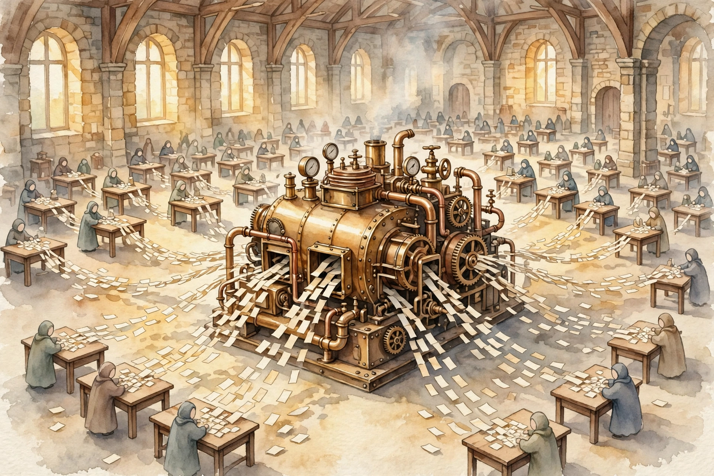
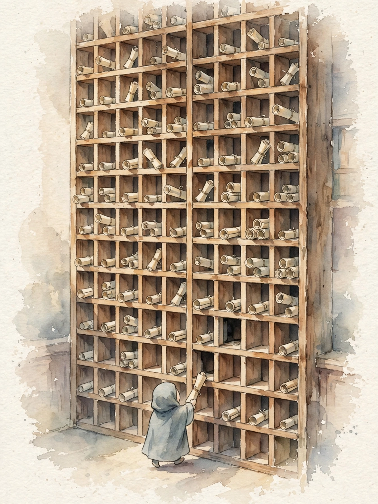
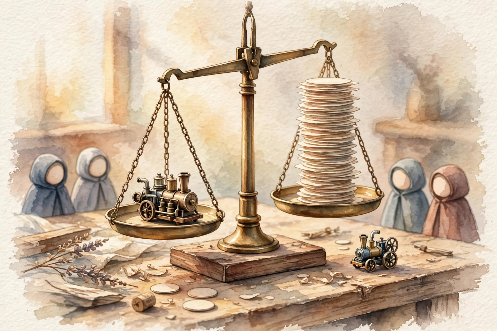

LLM Knowledge Base · Companion
The bridge from transformer internals to production serving: the sampler, batching, the KV cache rent, paging, quantization, speculation, honest benchmarks, and the economics that decide survival.
SOURCE / INTERPRETATION: HOW TO READ THE TAGS
From the lesson SOURCE: the idea, and every number beside it, comes from the cited section of the source. The phrasing is the companion's.
Illustration INTERPRETATION: invented by the companion: an analogy, a toy with made-up values, or a what-if. Never source content.
companion INTERPRETATION: companion voice: the idea above the tag is from the source. The generalization below it is the companion's.

From the lesson 08-inference-serving-bridge.html, chapter 0
Volume 4 built the transformer and the KV cache from scratch. Volume 3 covered mixed precision. Volume 6 covered profiling. This volume is a bridge, not a beginner book. The bridge runs from I understand the transformer to I can serve a model in production, and the reader defends every number on the way.
The volume assumes four ideas by name, with no re-teach: the KV cache, softmax, mixed precision, and the fact that decode is memory-bandwidth bound. The volume owns seven topics in serving-stack order: decoding, batching, the KV cache, paging, quantization, speculation, and honest benchmarks. The capstone serves the tiny GPT from Volume 5 with a real KV cache, benchmarks the server with rigor, and runs a quantization pass. The chart below shows the study plan for the volume itself.
Study-plan minutes by section
The minutes the study plan assigns to each section of this volume
| Item | Minutes |
|---|---|
| How this volume fits | 2 |
| Decoding from zero: greedy, temperature , top-k , top-p | 10 |
| Batching: static vs continuous, and the throughput math | 7 |
| The KV cache: where decode's cost lives | 8 |
| KV cache paging and disaggregated prefill/decode | 8 |
| Quantization survey: PTQ, GGUF , QAT , and what breaks | 7 |
| Speculative decoding, cleanly explained | 7 |
| Benchmarking rigor: latency, tails, honest harnesses | 8 |
| Capstone lab: serve the tiny GPT | 6 |
| Interview Q&A | 3 |
| Appendix 8A: Inference Economics | 39 |
Source: study/08-inference-serving-bridge.json in the llm-knowledge-base repo. Each value is the minutes field of one section of this volume. The eleven values sum to 105 minutes. The plan adds 1 minute for the watch list and 2 minutes for the closing section, 108 minutes in total.
From the lesson 08-inference-serving-bridge.html, chapter 1
The model produces raw scores, the logits, for the next token. Logits are not a decision. Decoding is the decision rule that turns scores into a choice. Greedy decoding always takes the best token. The other rules draw at random, with the odds shaped by temperature, top-k, or top-p. The rule sets eval scores and user experience, and the rule decides whether two benchmarks allow a fair comparison.
Two phases of generation: prefill and decode. Prefill processes the whole prompt in one parallel forward pass and computes keys and values for every prompt token at once. Decode then writes the answer one token at a time. Two clocks measure the phases. TTFT, time to first token, belongs to prefill. TPOT, time per output token, is the streaming cadence of decode. Prefill is compute-bound: big parallel matrix math. Decode is memory-bound: each step streams all the weights from memory to make a single token. Every serving decision in this volume targets one phase or the other.
From logits to probabilities. Softmax with temperature divides each logit by T before the exponentials, then normalizes by the sum. At T = 1 the draw uses the raw distribution. T below 1 sharpens the distribution. T above 1 flattens it. T = 0 is greedy. Temperature is a divisor inside the exponentials, not a creativity dial. At T = 2 the model is not more creative. The model is more random, and most newly reachable tokens are worse, not better.
Worked example, traced by hand. Four tokens carry logits 2.0, 1.5, 0.5, and minus 0.5. The exponentials are 7.389, 4.482, 1.649, and 0.607, with sum 14.127. At T = 0.5 the top token holds 0.702. At T = 1 it holds 0.523. At T = 2.0 it holds 0.394, and the last token still holds 0.113. Same model, same logits, wide apart behavior.
Top-k and top-p: cutting the tail before you draw. Top-k keeps the k most likely tokens and renormalizes the survivors. At k = 2 on the trace, the two survivors move from 0.523 and 0.317 to 0.623 and 0.377. Top-p keeps the smallest set of tokens with total mass at least p. At p = 0.9 the trace keeps three tokens, at 0.546, 0.331, and 0.122 after the renorm. Top-p adapts to confidence: a sharp distribution keeps few tokens, a flat one keeps many. Top-k always keeps exactly k.
Under the hood: the sampling loop. One loop runs per token, six steps per pass. Production chat systems sit near temperature 0.7 with top-p 0.9. Coding assistants drop to temperature 0.2 or greedy, because one wrong token breaks the program. Greedy plus a fixed seed makes evals reproducible. Sampling never touches the model weights. Sampling only changes the path through the probability tree.
Step 1: one forward pass produces the logits. Step 2: the server divides the logits by T. Step 3: top-k or top-p masks the tail. Step 4: the server renormalizes the survivors to sum 1. Step 5: a random draw picks one token. Step 6: the server appends the token and loops back to step 1, until the stop token ends the run.
From the lesson 08-inference-serving-bridge.html, chapter 2
Batching runs several user requests through the model in one pass. Static batching groups requests, runs the whole group to completion, then takes the next group. Continuous batching lets a finished request leave and a new request join at every decode step. The idea matters because decode is memory-bound. Each token forces one full stream of the weights from memory. One stream costs near the same for 1 sequence or for 32.
Worked throughput math (illustrative numbers). A 14 GB model on a GPU with 2 TB/s of memory bandwidth sets a floor near 7 ms per decode step: 14 GB over 2 TB/s. Batch 1 gives one token per 7 ms, about 140 tokens per second. Batch 32 gives 32 tokens per near 8 ms, about 4,000 tokens per second. Same weights, same memory reads, near 28 times the throughput. The ceiling is KV cache memory, and chapter 4 of this companion does that math.
Four requests with output lengths 10, 20, 30, and 40 tokens show the scheduling gap. In a static batch all four wait for the longest. The first user waits 320 ms for an 80 ms answer, and the early slots sit idle. In a continuous batch the first user exits at 80 ms, and fresh requests refill the free slots at once. Batching buys throughput, not latency. A request in a big batch runs slower, because each step does more work. The right batch size is the largest one that still meets the latency SLO.
Under the hood: what the scheduler actually does. Each iteration the scheduler reads three queues: waiting prefills, running decodes, finished sequences. The scheduler picks a set that fits in GPU memory, runs one step, then repeats. Chunked prefill mixes one chunk of prefill with many decodes in a step, and keeps the compute units and the memory bus busy at once. The knobs are max batch size, max tokens per step, and the admission rate for new prefills.
From the lesson 08-inference-serving-bridge.html, chapter 3
A decode step makes one token by attention over all prior tokens. The naive path recomputes the keys and values of every prior token at every step, and total work grows with the square of the answer length. The KV cache is the saved record of those keys and values. Each new token computes one pair and appends the pair. The cache turns quadratic recompute into a flat per-step cost. The cache is also the largest memory consumer in serving.
The decode step, concretely. Prefill runs once over the prompt and fills the cache. Then the loop runs: read the cache, run one forward pass over the weights, emit one token, append the keys and values of that token, repeat until the stop token. Each step costs one weight-stream pass at any answer length. That flat cost is the whole point of the cache.
What the KV cache stores, and what it weighs. The formula is 2 times layers times heads times head dimension times bytes per value. The worked shape is a 13B-class model with 40 layers, 32 heads, head dimension 128, at fp16. The product is 655,360 bytes, about 0.625 MB per token. A 2,048-token sequence holds about 1.28 GB of cache. The model shape fixes the bytes per token. Serving changes only the sequence count that shares the GPU.
The felt problem: two taxes on every token. Tax one is the bytes. A 70B-class model at 4k context holds near 2.5 MB per token in fp16, so 100 concurrent sequences need about 1 TB of cache, far more than the weights. Tax two is fragmentation. The naive server reserves the maximum length of each sequence up front, in one block. A reservation of 2,048 slots for a 700-token answer strands 1,348 slots, 66 percent of the reservation, as dead memory. The two taxes cap the batch size: memory, not compute, and mostly wasted memory.

From the lesson 08-inference-serving-bridge.html, chapter 4
PagedAttention manages the KV cache the way an operating system manages RAM. Memory splits into fixed-size blocks, 16 tokens per block in the default setup of the source system. Each sequence owns a block table that maps logical blocks to physical blocks at any place in memory. Sequences with a shared prefix share blocks. Paging does not shrink the cache. Paging removes the waste around the cache, and the usable fraction of GPU memory grows.
Under the hood: the PagedAttention kernel. The attention kernel drops the contiguity assumption. For each query the kernel walks the block table of the sequence, loads the physical blocks, and accumulates attention over them. Two wins fall out. Beam search and parallel sampling share the blocks of the prompt across candidates, with copy-on-write on divergence. Preemption turns cheap: the scheduler can evict the blocks of a low-priority sequence to CPU memory and resume the sequence later, because blocks relocate at will.
Disaggregated prefill and decode. Prefill wants compute. Decode wants memory bandwidth. Split serving puts prefill on compute-tuned workers and decode on bandwidth-tuned workers, in the pattern of the published Splitwise and DistServe systems that the source names. After prefill, the worker ships the prompt KV cache to a decode worker over a fast link, and decode runs there. The price is one KV transfer per request. The gain is two pools that scale on separate dials. For short prompts on fast hardware, one worker can still win.
From the lesson 08-inference-serving-bridge.html, chapter 5
Quantization stores model numbers in fewer bits: fp16 to int8 to int4 and below. Decode is memory-bound, so speed and cost track model bytes near linearly. Three flavors carry the survey. PTQ, post-training quantization, converts a trained model with no retrain. QAT, quantization-aware training, simulates quantization inside training, so the model adapts. GGUF is a file format for quantized inference, with a strength on CPU.
Worked memory math. Each rung halves the bits. At 70B: fp32 needs 280 GB, fp16 needs 140 GB, int8 needs 70 GB, int4 needs 35 GB. At 13B: 52 GB, 26 GB, 13 GB, 6.5 GB. The KV cache rides on top of the weights in every row. That stack is the reason production systems quantize weights and KV cache both.
PTQ methods: the intuition, not the recipe. GPTQ quantizes one layer at a time and picks the round direction of each weight so the layer output barely moves, with second-derivative data from a small calibration set. AWQ protects the near 1 percent of weights that connect to huge activation values: scale the salient weights up before the quantize step, then fold the scale back at run time. GGUF k-quants group weights in small blocks with one scale per block, and quantize the scales too, so one bad scale poisons only its own block. QAT runs fake quantization in the forward pass and a straight-through estimator in the backward pass. QAT gives the best quality at low bit width, at the price of a full training run.
What breaks at each precision. Fp16 and bf16 are the safe default, with negligible loss. Int8 weights are usually fine with per-channel scales. The watch item is activation outliers, a few channels with huge values that crush per-tensor scales. Int4 needs GPTQ or AWQ class methods plus calibration data from the real domain. A code model calibrated on chat text degrades in silence on code. Below 4 bits, perplexity rises steeply and long reasoning chains break first. KV cache quantization is a separate lever, and the lever mostly moves long-context quality. One trap closes the chapter: change precision and sampler in one experiment, and no score change has an owner.
From the lesson 08-inference-serving-bridge.html, chapter 6
Speculative decoding uses a small, fast draft model to guess several tokens ahead. The big target model checks all the guesses in one forward pass. The algorithm keeps the guesses the target accepts, fixes the first disagreement, and continues. The output distribution matches the target alone, by construction of the accept rule. One target pass is the expensive unit of decode. A draft token costs a fraction of one pass.
How it works, step by step. Step 1: the draft model writes gamma candidate tokens, one by one, at low cost. Step 2: the target model runs one forward pass over the prompt plus all candidates, and scores each position in parallel. Step 3: the walk goes left to right, and accepts token i with probability min(1, p_target over p_draft). The rule is rejection sampling, and the rule preserves the exact target distribution. Step 4: at the first rejection, the algorithm samples a replacement from the adjusted distribution and stops. Step 5: if all candidates pass, the algorithm draws one bonus token from the target. Either way, one target pass yields several tokens.
Worked speedup math (illustrative). Let alpha be the mean per-token acceptance probability. Expected tokens per target pass equal 1 over (1 minus alpha). At alpha 0.75 the yield is 4 tokens per pass. The cost is one target pass plus 5 draft tokens at 0.1 units each: 1.5 units for 4 tokens, near 2.7 times the baseline rate. At alpha 0.2 the yield is 1.25 tokens per 1.5 units: slower than baseline. The draft must be good, and the draft must be cheap.
Where the draft comes from. Four options, cheapest first. A smaller sibling model from the same family. A distilled draft with training to mimic the target. Self-speculation heads on the target itself, good for 2 to 3 tokens ahead, with no separate model to serve. N-gram or retrieval drafts that copy from the prompt, strong when the answer repeats the context, useless otherwise. One constraint binds all four options: the draft shares the vocabulary of the target, or the probabilities never compare. Speculation helps memory-bound decode only. Prefill already runs tokens in parallel, and no speculation applies there.

From the lesson 08-inference-serving-bridge.html, chapter 7
Benchmarking rigor is the discipline of measurement that makes numbers mean a thing: fixed workloads, reported conditions, honest reads. The vocabulary is TTFT, TPOT, throughput, and tail latency at p50, p95, and p99. Every claim in this volume is a number. Without rigor, numbers lie by accident: prompt lengths differ, batch sizes differ, samplers differ, GPUs run warm or cold.
Latency vs throughput, and the knee. Throughput rises with batch size, and per-request latency rises with it. Plot throughput on one axis and latency on the other: the curve climbs gently, then bends sharp upward at the knee, where the GPU saturates and queue time explodes. Right of the knee buys a little throughput for terrible latency. Production systems pick a point left of the knee that meets the latency SLO, then scale out with more replicas for more throughput.
Tail latency: the average lies. A mean hides the users who suffer. At p50 of 200 ms and p99 of 2.5 s, one user in a hundred waits 12.5 times the median. The usual causes of a bad tail are three: no continuous batching, so short requests wait behind long ones. No request priority. KV cache evictions under memory pressure. A benchmark that reports only the mean is incomplete on its face.
The reproducible harness checklist. Six items carry the check. One: discard the first N requests as warmup, because cold kernels and cold caches are not steady state. Two: fix the workload, same prompts and same lengths, or report length buckets apart. Three: fix the sampler and the seed. Four: report the setup, GPU type and count, batch size, precision, prompt lengths, concurrency. Five: measure the system, not the client, and watch client-side queue time. Six: run long enough for the scheduler queues to stabilize.
How to read a benchmark honestly: a worked example (illustrative). Each claim earns a question. A claim of 4,000 tokens per second earns the batch size and the sequence length. A claim of 2.5 times faster earns the baseline and the hardware. A claim of p99 under 1 second earns the concurrency and the prompt mix. A claim of int4 with no quality loss earns the eval list and the sampler state. Treat any speedup claim as a rumor until the page names batch size, sequence lengths, sampler and seed, hardware, and the baseline. A benchmark section with no named baseline earns a walk-away.
From the lesson 08-inference-serving-bridge.html, chapter 8
The capstone serves the tiny GPT from Volume 5: a 2-layer, 100K-parameter character model. The lab puts the model behind a real generate loop with a KV cache. The lab benchmarks the loop with the chapter 7 discipline. The lab then runs a per-channel int8 quantization pass in the chapter 5 pattern. One lab applies three chapters.
The measured results stand in the source. With the KV cache, 40 tokens take 32.2 ms. Without the cache, the same 40 tokens take 47.6 ms. The ratio is 1.48 times on CPU, and the gap grows far larger on a GPU with a real-size model. The int8 pass shows max logit drift of 4.30e-03, with the argmax preserved. Three changes teach the failure modes. Kill the cache and per-token time grows with sequence length. Quantize per-tensor in place of per-channel and the drift jumps. Raise the output to 400 tokens and the no-cache run slows with the square of length, as the cached run stays linear.
From the lesson 08-inference-serving-bridge.html, interview section
Five questions close the volume, in the form interviewers ask them. One: explain speculative decoding, and the reason the output distribution matches the big model alone. Two: name the problem PagedAttention solves, with the operating-system analogy and the size of the waste. Three: state the case for a prefill and decode split across workers, and name the catch, the KV transfer. Four: define TTFT, TPOT, and tail latency, and state the reason the benchmark question tests rigor. Five: quantization shrank each forward pass, so the reason pass count stays the problem, and the two knobs that cut passes against the one knob that cuts cost per pass.
Each answer builds on one chapter of this companion. The section is a self-test: say each answer from memory before a read of the source answer.
From the lesson 08-inference-serving-bridge.html, appendix 8A
The appendix asks the production question: what does each good answer cost, and how does the team drive that number down with no quality loss. Every worked number in the appendix is an illustrative example from real pricing shapes, not a measured benchmark. Four chapters cover the economics, and four short patch chapters fill gaps the verification pass found thin in the main volume.
1. Cost per successful outcome. The full price of one request a user calls good, with the failures inside the price. Three layers stack: raw GPU cost per request, a utilization adjustment because idle GPUs still bill, and a success adjustment because retries and bad answers cost money. The worked fleet is a 70B model in bf16: 140 GB of weights on two 80 GB cards at about $3 per GPU hour, $6 per hour for the fleet. At 1,500 tokens per second the fleet makes 5.4 million tokens per hour, $1.11 per million tokens at full use. Batch size alone moves that price: batch 1 near 120 tokens per second costs $13.89 per million. Batch 8 near 700 costs $2.38. Batch 64 near 1,500 costs $1.11. A 2,000-token request costs $0.0022 raw. At 15 percent utilization the request costs $0.015. At a 70 percent success rate the outcome costs $0.021. The raw number said two-tenths of a cent. The honest number says two cents.
2. Model routing and cascades. A cascade serves each request with a small cheap model first, checks the answer at a quality gate, and escalates only the hard share to a big expensive model. A router is the same idea with more tiers, or with a per-request pick. The worked prices: an 8B model at $0.22 per million tokens and the 70B model at $1.11. An 80/20 split costs 0.80 times 0.22 plus 0.20 times 1.11, equal to $0.40 per million tokens, 2.8 times cheaper than the big model alone. With a judge gate at $0.05 per million the average is $0.49, still 2.3 times cheaper. The fast path answers in near 150 ms. The escalated path takes near 600 ms. The gate is the load-bearing piece: gate accuracy sets cost and quality at once.
3. Shadow traffic and safe rollout. Shadow traffic sends a copy of real production requests to a candidate model that serves nobody. A comparator scores the candidate against the current model on quality, latency, and cost. Promotion criteria stand in writing before the shadow run starts: quality within 0.5 points of baseline, p99 latency within 110 percent of baseline, cost per request at or below baseline. The worked service runs 50,000 requests per day. Baseline cost is $0.020 per request and candidate cost is $0.014. One shadow week mirrors 350,000 requests and costs $4,900. Savings after promotion run $2,100 per week. Breakeven lands at 2.3 weeks. Shadow mode is cheap insurance, not free tests: at full mirror the shadow fleet costs as much as production.
4. Prefill/decode disaggregation economics. The appendix prices the chapter 4 split. For a 4,000-token prompt on a 70B model, the KV transfer is 4,000 times 2.5 MB, near 10 GB per request. The sizing case runs 8 GPUs with a 30 percent prefill share: 2 prefill GPUs and 6 decode GPUs. The decode pool climbs from near 60 percent utilization to near 85 percent, freed from prefill stalls, and time between tokens drops near 30 percent in the published results the source cites. The pessimistic case, short prompts and a slow fabric, loses near 9 percent. The rule: split when prefill is a large share of work and the fabric is fast. Keep one fleet otherwise.
5. Patch: FP8 quantization, made explicit. FP8 is an 8-bit float format in two flavors. E4M3 holds 1 sign bit, 4 exponent bits, and 3 mantissa bits, range plus or minus 448: more precision, less range, the pick for weights and activations. E5M2 holds 5 exponent bits and 2 mantissa bits, range plus or minus 57,344: more range, less precision. The exponent handles the wide dynamic range of activations with no per-channel heroics. A 70B model drops from 140 GB to 70 GB and fits on one top card. The source reports up to 1.6 times throughput with minimal accuracy loss. The hardware gate is strict: full weights-and-activations FP8 needs recent top-tier cards. Dynamic FP8 computes scales at run time. Static FP8 fixes scales from calibration data ahead of time, and static is the production mode.
6. Patch: KV-cache quantization, and why keys get gentler treatment. Keys carry outliers in fixed channels, so keys quantize per-channel. Values vary more token to token than channel to channel, so values quantize per-token. One layout for both tensors earns the worst of both worlds. A residual window keeps the most recent near 128 tokens in fp16. Tokens quantize as the tokens age out of the window. The memory math at 4k context for 100 concurrent sequences: fp16 near 1 TB, int8 near 512 GB, int4 near 256 GB. Int4 KV frees near 768 GB across the workload: room for a bigger batch, longer contexts, or fewer GPUs. Int8 KV is near lossless in production engines. Int4 buys large savings on long-context work.
The router picks 2 of 4 experts per token. Only those 2 run. How to read this diagram. The token enters. The router scores all 4 experts. Top-2 are picked (green). The others (grey) stay idle. Active parameters per token are fixed by top-k routing. What breaks: all experts must live on GPU memory. Cost is memory, not compute. 7. Patch: MoE serving, expert parallelism, and hot experts. In a mixture-of-experts layer the router sends each token to a few experts out of many. The canonical example in the source holds 671B total parameters, 256 routed experts plus one shared expert, and near 37B active per token: 94.5 percent of the feed-forward parameters sit idle for any token. Expert parallelism shards experts across GPUs, and tokens travel to the experts over the network in an all-to-all dispatch. The failure mode is the hot expert: routing never runs uniform, and the overloaded GPU sets the pace for the whole layer. The worked simulation routes 800 tokens with 40 percent on one expert and prints an imbalance factor near 3.2, against 1.0 for uniform routing. The alert line in the source: one expert above 40 percent of tokens. The fixes place redundant copies of hot experts on extra ranks and spread the load.
8. Patch: multi-tenant LoRA serving. One base model loads into GPU memory once. Many small adapters, one per tenant, ride on top of the shared base computation. Each request names its adapter, and requests for separate adapters batch together in one forward pass. A rank-16 adapter on a 7B model costs near 16 MB. One hundred tenants cost 1.6 GB of adapters against 1,400 GB of naive model copies. The shared total is 15.6 GB, and the savings factor prints near 90 times. The hard problems are operational: adapter version control, cold-start latency for rare adapters, and a dynamic-load endpoint that stays off the public network.
From the lesson 08-inference-serving-bridge.html, closing section
The reader now serves a model and defends the numbers: the sampler, batching, the KV cache, paging, quantization, speculation, and honest measurement. Three doors stand open. Volume 9 puts served models inside agents and RAG systems, where each loop iteration multiplies the serving cost. Volume 10 turns the benchmark into a production contract: SLOs, rollouts, cost control. The Inference and Serving role track goes deeper on the stack of this volume.
Two talks match the volume. The PagedAttention talk walks the paper: three kinds of KV cache fragmentation, block tables, memory share across beam search. The quantization talk frames the field around the memory wall and the mechanics of per-group scales. The read list names the PagedAttention paper, the speculative decoding paper, the AWQ paper, engine docs, and a visual guide to quantization.
Every lesson on this page, in order. Tap one to return to its chapter.